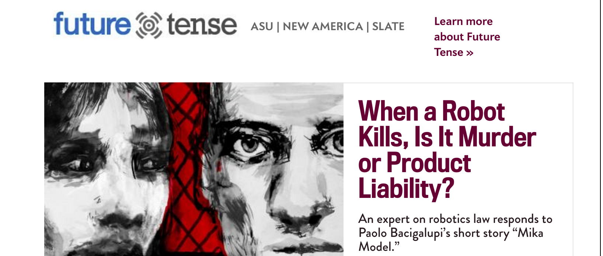

New ways of working
Nesta P&R Away Day 28 April 2016
Introduction
We analyse and support innovation
But how can we innovate in our own work?
Today we want to explore ways of doing this
Plan for the session
- Present some methods and tools we can use / have started using
- Go beyond the jargon to talk about applications
- Do a fun exercise
- Discuss next steps: how to get started
Context: Digitisation
- More opportunities to measure
- More opportunities to analyse
- More opportunities to communicate
- More opportunities to promote
- Also, different ways of working
Collecting and analysing data
There are many new data sources, methods and tools we can use to study innovation
Working with web data
Examples
- Political Futures Tracker
- Video games mapping project
- Assessing Chinese demand for UK content using social media
Machine learning and text mining
Examples
- Measuring the digital economy
- Predicting what jobs are at risk of automation
- Identifying tech skills needs from job ads
Social network analysis
Examples
- Measuring the impact of events on connectivity
- Mapping entrepreneurial and collaboration networks
- Another example?
Ethnographic methods
Examples
- People powered health
- CI analysis of Patient groups
Communicating
We can use new tools and formats to communicate with our audiences
Data visualisation
Cath will talk about this later on in the presentation
Publish open data and code
Examples
- Open makerspace dataset
- Open data challenges series
- Open code in software repositories like GitHub
Build websites and data applications
Examples
- European Digital City Index
- Data USA
- Arloesiadur
Aggregate, explain and storytell
Examples
- Reading lists (GovLab)
- Ask me Anything sessions (Reddit)
- Long and the Short
Running projects
Prototyping and experimenting

- Piloting reports (IGL Toolkit/Guide)
- A/B testing (Newsletters)
Engaging
- Crossposting in collaboration with other organisations and outlets
- Writing progress report blogs
- Using project stakeholders to promote and campaign
Measuring impacts
- Using web analytics
- Stakeholder surveys/maps
- Testimonials
And now for the fun!

Exercise - Rethinking some our great reports from the ground up
Aim
Are there different ways we could have approached some our past reports and projects, this both in terms of different types of data we could have used, methods we could have used to capture and analyze the data and different ways we could have visualized and communicated the work?
The plan
| Time | Task | Activity |
| 5 minutes | Get organised | Get into groups and pick a report you would like to work on |
| 20-25 minutes | Come up with a new approach | Groups work on new approach focusing on:
Budget isn’t an issue, but we can’t fund a new CERN If you got time, discuss and map out in your group which of the skills required to do the new project you outlined we currently have at Nesta. |
| 10 minutes | Present back | Each group is given 2 minutes to present their new approach.
Extra points are given to groups that have drawn / illustrated what they would like to do. |
| 2 minutes | Voting | Each participant is given 2 votes they can use to vote for the best project idea. [we don’t have to do this, but could add a nice competitive element] |
Getting started
1: Good news, almost everything is free
- The tools are free: R, Python, Gephi, d3 all opensource
- Learning and advice are free: Stack overflow, Quora,The Nesta data group and wider collective intelligence
- Examples are free: Extensive how to examples available online
- Technique are free: Almost all techniques implented in the software
- Data is free: Most web-based data is free - within reason
2: Bad news, time is money - what do about this
- Have an interest: It's difficult to be motivated to learn things for their own sake
- Have a question: Easy to go on a journey... and not reach a destination
- Be realistic: Where possible try to build on stuff you know in terms of domains/techniques
- Collaborate: Outsource the learning, but do bring something to the table
- Don't believe hype: Still loads of value in qual research, traditional stats and surveys